방송통신기사 (2012-03-11 기출문제)
1과목: 디지털 전자회로
1. 전력증폭기의 직류공급 전압은 12[V], 전류는 400[mA]이고 효율이 60[%]일 때 부하에서의 출력전력은?
- 0.7[W]
- 1.44[W]
- 2.88[W]
- 4.8[W]
(정답률: 50%)

2. 이상적인 OP-AMP의 특성으로 틀린 것은?
- 입력임피던스(Zi )가 무한대이다.
- 출력임피던스(Zo )가 무한대이다.
- 전압이득(Av)이 무한대이다.
- CMRR(동상제거비)는 무한대이다.
(정답률: 48%)
3. 다음 그림은 정류회로의 입력파형과 출력파형을 나타내었다. 주어진 입출력 특성을 만족시키는 정류회로는? (단, 다이오드의 문턱전압은 0.7[V]이고, 변압기의 권선비는 1:1이라 가정한다.)
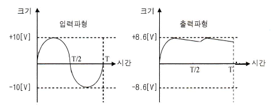
- 반파정류회로
- 중간탭 전파정류회로
- 2배압 정류회로
- 용량성 필터를 갖는 브리지 전파정류회로
(정답률: 54%)
4. 그림은 윈-브릿지(Wein-bridge) 발진회로이다. R1 R2 값이 감소할 경우 발진주파수의 변화는?
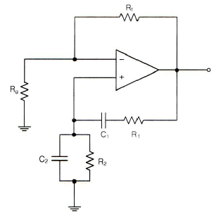
- 증가한다.
- 감소한다.
- 변화없다.
- 발진이 되지 않는다.
(정답률: 58%)
5. 다음 캐스코드 증폭기에 대한 설명으로 틀린 것은?
- 입력단은 공통베이스, 출력단은 공통이미터로 구성된 증폭기이다.
- 전압 궤환율이 매우 적다.
- 공통베이스 증폭기로 인해 고주파 특성이 양호하다.
- 자기 발진 가능성이 매우 적다.
(정답률: 38%)
6. 무부하일 때 직류 출력전압이 120[V]인 전원회로의 전압 변동률이 20[%]일 때 이 전원회로의 부하시 직류 출력전압은 얼마인가?
- 100[V]
- 10[V]
- 110[V]
- 11[V]
(정답률: 47%)
7. 멀티바이브레이터의 단안정, 무안정, 쌍안정의 동작은 어떻게 결정되는가?
- 전원 전압의 크기
- 바이어스 전압의 크기
- 전원 전류의 크기
- 결합회로의 구성
(정답률: 48%)
8. 반감산기의 동작을 옳게 나타낸 것은?
- 1자리의 2진수의 감산을 하는 동작을 한다.
- 2자리의 2진수의 감산을 하는 동작을 한다.
- 3자리의 2진수의 감산을 하는 동작을 한다.
- 1자리의 carry를 덧셈과 같이 감산하는 동작을 한다.
(정답률: 45%)
9. 다음 중 두 게이트 입력이 0과 1일 때, 1의 출력이 나오지 않는 것은?
- NOR 게이트
- OR 게이트
- NAND 게이트
- Exclusive OR 게이트
(정답률: 42%)
10. 다음의 디지털 장치에서 디코더(decoder)의 반대 동작을 하는 장치는?
- 멀티플렉서(multiplexer)
- 전가산기(full adder)
- 디멀티플렉서(demultiplexer)
- 인코더(encoder)
(정답률: 56%)
11. 2-out of-5 code에 해당하지 않는 것은?
- 10010
- 11000
- 10001
- 11001
(정답률: 57%)
12. 비동기 카운터와 관계없는 것은?
- 리플 카운터라고도 한다.
- 설계가 쉽다.
- 전단의 출력이 다음 단의 트리거 입력이 된다.
- 속도가 빠르다.
(정답률: 43%)
13. 발진을 위한 조건으로 적합한 것은?
- 클리퍼 회로가 필요하다.
- 증폭기에 부궤환 회로를 부가한다.
- 공진 결합 회로가 필요하다.
- 증폭기에 정궤환 회로를 부가한다.
(정답률: 42%)
14. 주파수변조를 진폭변조와 비교할 경우 잘못된 것은?
- 점유주파수대폭이 넓다.
- 초단파대의 통신에 적합하다.
- S/N비가 좋아진다.
- Echo의 영향이 많아진다.
(정답률: 55%)
15. 다음 논리 함수
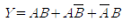
를 간소화하면 옳은 것은?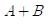
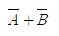
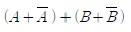
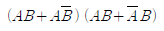
(정답률: 50%)
16. 선형 증폭기 동작을 위한 바이어스 조건은?
- A급 동작
- B급 동작
- C급 동작
- D급 동작
(정답률: 61%)
17. 정보 전송의 변복조 기술에서 반복 주기가 일정한 펄스의 시간폭을 신호파의 진폭에 대응하여 변화시키는 방식은?
- PCM
- PPM
- PWM
- PAM
(정답률: 52%)
18. 다음 그림에서 1차측과 2차측의 권선비가 5:1일 때, 1차측의 입력전압 Vrms=120[V]이다. 2개의 다이오드가 이상적이라고 가정할 때 직류 부하 전류의 평균치는 약 얼마인가?
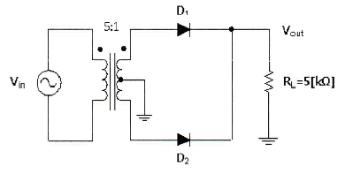
- 1.74[mA]
- 2.16[mA]
- 5.11[mA]
- 6.82[mA]
(정답률: 33%)
19. 30:1의 리플계수기를 설계할 때 최소로 필요한 플립플롭의 수는?
- 4
- 5
- 6
- 8
(정답률: 50%)
20. 그림과 같은 회로에 대한 설명 중 옳은 것은?
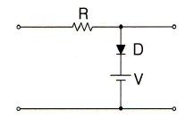
- 입력 파형의 아랫부분을 잘라내는 베이스 클리퍼 회로이다.
- 입력 파형의 윗부분을 잘라내는 피크 클리퍼 회로이다.
- 직렬형 베이스 클리퍼 회로이다.
- 입력 파형의 위, 아래 부분을 일정하게 잘라내는 클리퍼 회로이다.
(정답률: 49%)
2과목: 방송통신 기기
21. 다음 중 특수한 디지털 영상 효과를 만들어 내는 기기는 무엇인가?
- ENG(Electronic News Gathering)
- EFP(Electronic Field Pick-up)
- 텔레신(Telecine)
- DVE(Digital Video Effect)
(정답률: 76%)
22. SD급 디지털 비디오 신호의 전송과정에서 비트에러 등을 체크하기 위한 용도로 사용되는 것은?
- Checksum
- Parity check
- EDH(Error Detection & Handling)
- ECC(Error Correction Code)
(정답률: 78%)
23. NTSC 방식에서 1화면의 주사선수가 525개일 때, 1초간 30장의 화면이 송출이 된다면 수평주사주파수는 얼마인가?
- 60[Hz]
- 525[Hz]
- 15,750[Hz]
- 4.5[Hz]
(정답률: 85%)
24. 그래픽 처리 과정에서 물체의 감추어진 부분을 제거하고, 물체의 표면에 색상과 음영을 입히는 과정은?
- 스크립트
- 마스터링
- 랜더링
- 모델링
(정답률: 84%)
25. 데이터방송 표준에 대한 설명으로 맞지 않는 것은?
- ACAP은 기본적으로 GEM과 OCAP1.0의 규격을 따르고 있다.
- OCAP은 DVB-MHP1.0.2를 따르며, 프로토콜 측면에서 ACAP과OCAP은 대동소이하다.
- OCAP1.0은 HTML을 DVB-HTML에서 채용해 정의하고 있다.
- ACAP은 ACAP-J, ACAP-X, ACAP-C의 서브시스템으로 나뉜다.
(정답률: 56%)
26. 다음 중 NTSC용 웨이브폼 모니터에서 측정된 50 IRE는 몇 [mV]인가?
- 357[mV]
- 350[mV]
- 346[mV]
- 334[mV]
(정답률: 85%)
27. 다음 중 마이크의 원리에 따른 분류에 속하지 않는 것은?
- 카본 마이크로폰
- 콘덴서 마이크로폰
- 다이나믹 마이크로폰
- 레이저 마이크로폰
(정답률: 74%)
28. Color의 위상각을 교정 또는 측정하는데 사용하는 계측기는?
- 벡터스코프
- 웨이브폼모니터
- 오실로스코프
- 전위차계
(정답률: 83%)
29. TV신호의 수평주사선수가 1,⑤0인 화면의 종횡비가 9:16일 때, 최고주파수는? (단, 프레임 주파수는 30[Hz/초])
- 4.5[MHz]
- 19.5[MHz]
- 5.5[MHz]
- 29.4[MHz]
(정답률: 69%)
30. 연주소 스튜디오 제작설비 중 음향 조정설비가 아닌 것은?
- 테이프 녹음 재생기
- 원반 재생기
- CDP
- 조명 콘솔
(정답률: 73%)
31. 한국의 아날로그 TV 자막방송의 기술기준으로 맞지 않는 것은?
- 수직귀선소거기간을 이용하는 경우 신호의 크기는 100 IRE 이내로 한다.
- 자막방송의 데이터라인은 주사선 중 한글은 284라인에, 영어는 21라인에 중첩한다.
- 데이터 라인은 클럭동기 13비트, 바이트동기 3비트, 첫째 데이터 8비트, 둘째 데이터 8비트로 구성된다.
- 한 데이터라인의 데이터 전송용량은 2바이트이다.
(정답률: 48%)
32. CATV 시스템에서 분기 단자에 신호를 가했을 때 입력레벨과 간선의 출력단자에서 나오는 출력레벨과의 차에 의해 발생하는 손실은?
- 누화손실
- 결합손실
- 단자간 결합손실
- 역결합손실
(정답률: 79%)
33. 다음 중 CDM(Code Division Multiplexing)기술에 대한 설명으로 틀린 것은?
- 64개의 코드 중에서 개당 256[kbps]를 수신가능하나 채널코딩과 기타 여러 가지 이유로 30개의 채널 중에 29개 채널을 이용할 수 있다.
- 코드분할다중화방식이라 불린다.
- 변조방식은 8VSB이다.
- 위성DMB는 CDM방식으로 단일파 방식이다.
(정답률: 64%)
34. 디지털라디오방송 방식인 IBOC의 변조방식은?
- 8-VSB
- Eureca-147
- OFDM-QPSK
- MUSICAM
(정답률: 57%)
35. 다음 중 진폭변조의 장점이 아닌 것은?
- 변복조 회로가 간단하다.
- 주파수 변동에 강하다.
- 레벨 변동에 영향을 받지 않는다.
- 피변조파의 점유 주파수 대역폭이 좁다.
(정답률: 50%)
36. 텔레비전 공시청시설의 헤드앤드설비의 기자재가 아닌 것은?
- 진폭변조기
- 시그널프로세서
- 다채널혼합기
- 간선증폭기
(정답률: 64%)
37. 방송 서비스와 데이터방송표준이 바르게 짝지어진 것은?
- 지상파방송 : CAM
- 위성방송 : ACAP
- 케이블방송 : OCAP
- 인터넷방송 : DVB-GEM
(정답률: 81%)
38. 다음 중 무궁화위성 3호기의 위치로 적합한 것은?
- 동경 114°, 고도 약 34,000[km]
- 동경 115°, 고도 약 35,000[km]
- 동경 116°, 고도 약 36,000[km]
- 동경 117°, 고도 약 37,000[km]
(정답률: 80%)
39. 비디오 스위처(switcher)의 기능 중 현재의 영상과 다음에 출력하고자 하는 영상을 혼합(mix)하여 부드럽게 전환하는 것을 무엇이라 하는가?
- 디졸브(Dissolve)
- 혼합(Mix)
- 컷(Cut)
- 프리뷰(Preview)
(정답률: 84%)
40. 다음 중 카메라 감마(gamma)에 관한 설명으로 틀린 것은?
- 감마를 낮게 하면 색도 대 휘도의 비율이 낮아진다.
- 감마 레벨을 높게 하면 화면의 채도가 낮아진다.
- 수상관의 감마는 촬상관의 감마보다 높기 때문에 보정회로를 사용한다.
- 감마는 파형모니터(WFM)상의 중간 영역에 속한다.
(정답률: 68%)
3과목: 방송미디어 공학
41. 다음 중 조명기의 앞부분에 설치되어 주명기의 광량을 조절하는 역할을 하는 금속판으로 2~4개 의 판으로 구성되며 각각의 판이 따로 움직여 조절이 가능한 것을 지칭하는 용어는?
- 반 도어(barn door)
- 톱 햇(top hat)
- 젤 익스텐더(gel extender)
- 빔 벤더(beam bender)
(정답률: 83%)
42. 디지털 녹화기(VCR)에서 음성신호 표본화주파수가 48[kHz]이라면, 2ch 방식, 16비트 양자화시의 전송 비트레이트는 몇 [Mbps]인가?
- 1.236[Mbps]
- 1.336[Mbps]
- 1.456[Mbps]
- 1.536[Mbps]
(정답률: 79%)
43. 다음 중 마이크의 지향성에 따른 분류에 대한 설명으로 틀린 것은?
- 무지향성 마이크는 모든 방향에서 발생하는 소리를 똑같이 흡수한다.
- 무지향성 마이크는 일정한 거리에서 같은 레벨로 수음이 되기 때문에 핀마이크로 사용이 어렵다.
- 양방향 지향성 마이크는 소리를 흡수하는 범위가 양쪽으로 형성되는 경우이다.
- 단일지향성 마이크는 마이크를 총처럼 겨누었을 때 앞부분을 향해서 오는 소리를 흡수하는 기능 가장 활발한 마이크를 말한다.
(정답률: 78%)
44. 중파방송의 주파수의 범위는 526.5[kHz]~1,606.5[kHz]이다. 이 중파방송 대역폭에서 전송할 수 있는 최대 사용 채널수는 이론적으로 몇 개인가?
- 120개
- 130개
- 100개
- 150개
(정답률: 82%)
45. 스튜디오 조명을 5K 조명기, 2K 조명기와 같이 분류할 때, “K"가 의미하는 것은 무엇인가?
- 색온도
- 크기
- 무게
- 전력 용량
(정답률: 86%)
46. 디지털 오디오의 표준 포맷 중 하나인 AES/EBU에 대한 설명으로 잘못된 것은?
- 프레임은 두 개의 subframe으로 구성되어 있다.
- 한 프레임은 48비트이다.
- 샘플링 주파수로 48[kHz]를 지원한다.
- 한 채널의 subframe 오디오데이터는 20비트가 일반적이며 24비트까지 지원한다.
(정답률: 53%)
47. 다음 중 괄호 안에 알맞은 단어는 무엇인가?
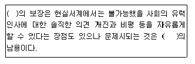
- 인터넷
- 자유성
- 사회성
- 익명성
(정답률: 85%)
48. HDTV의 해상도를 바르게 기술한 것은?
- 라인당 유효 화소소: 1,620 픽셀, 수평 해상도: 1,⑤0 라인
- 라인당 유효 화소소: 1,720 픽셀, 수평 해상도: 1,060 라인
- 라인당 유효 화소소: 1,820 픽셀, 수평 해상도: 1,070 라인
- 라인당 유효 화소소: 1,920 픽셀, 수평 해상도: 1,080 라인
(정답률: 83%)
49. 다음 중 NTSC 신호의 영상 및 음성의 변조방식으로 적합한 것은?
- 영상 : AM, 음성 : AM
- 영상 : AM, 음성 : FM
- 영상 : FM, 음성 : AM
- 영상 : FM, 음성 : FM
(정답률: 75%)
50. 다음 중 우리나라의 지상파 DMB 기술의 기반이 된 기술표준은 무엇인가?
- Eureka-147
- ISDM-TSB
- DRM
- IBOC
(정답률: 79%)
51. 다음 중 디지털 변조방식인 8-VSB 방식에 대한 설명으로 잘못된 것은?
- 데이터 전송률은 6[MHz] 채널에 19.39[Mbps]이다.
- 이동수신에는 적합하지 않은 방식이다.
- 변조기에는 8레벨의 트렐리스 부호화 복합 데이터신호가 입력된다.
- 각 데이터 세그먼트는 2개의 심볼로 구성된다.
(정답률: 56%)
52. 다음 중 벡터 형식의 이미지를 표현할 수 있는 파일 포맷이 아닌 것은?
- WMF
- EPS
- AI
- BMP
(정답률: 63%)
53. 우리나라 디지털 TV방송의 오디오 압축방식인 Dolby AC-3에 대한 설명으로 잘못된 것은?
- 5.1 포맷은 기존의 스테레오 채널(Left, Right)에 6개의 채널이 추가로 구성된 것이다.
- 5개의 메인채널과 주로 저음 영역을 담당하는 LFE(Low Frequency Effects)채널, 이렇게 6개로 구성된다.
- 메인채널의 주파수 재생영역은 3[Hz]~20[kHz]로 LFE 채널은 3[Hz]~120[Hz]로 주파수 영역이 제한된 채널이다.
- 5.1에서 “5” 는 5개의 메인채널을 뜻하며, “1”은 LFE를 뜻하며 메인채널 주파수의 1/10을 재생한다.
(정답률: 80%)
54. MPEG의 화상 데이터 구성요소가 아닌 것은?
- I 픽쳐
- S 픽쳐
- P 픽쳐
- B 픽쳐
(정답률: 73%)
55. 지상파 디지털 멀티미디어 방송에서 사용되는 오디오 압축 부호화 형식이 아닌 것은?
- MPEG-1
- MPEG-2
- MPEG-3
- MPEG-4
(정답률: 62%)
56. 다음 중 정상적인 컴포지트 비디오 신호(composite video signal)를 표현한 것으로 바르지 않는 것은?
- Full : 140 IRE
- Video : 100 IRE
- Sync : 30 IRE
- Burst : 40 IRE
(정답률: 75%)
57. MPEG 영상 데이터의 계층을 낮은 층부터 올바르게 연결한 것은?
- Block - Macroblock - Slice - Picture
- Macroblock - Block - Slice - Picture
- Slice - Macroblock - Block - Picture
- Slice - Block - Macroblock - Picture
(정답률: 78%)
58. 다음 중 텔레비전 방송 주파수에 관한 설명으로 틀린 것은?
- 일반적으로 아날로그 지상파 TV 방송 사용주파수는 30~300[MHz]이하의 주파수를 사용한다.
- 지상파 TV 방송의 VHF와 UHF 주파수 대역을 사용하고 있으며 각 채널당 주파수 대역폭은 6[MHz]씩으로 되어 이TEk.
- 아날로그 TV 수직 주사선 주파수는 15,750[Hz]이다.
- 디지털 방송시스템 도입으로 향후는 아날로그 TV 1개 채널로 SD급 디지털 채널로 전환시에는 4~5개로 확장이 가능하나, HDTV 1개 채널당 6[MHz]가 필요하다.
(정답률: 69%)
59. 아날로그 음성신호의 양옆에 디지털 정보를 배치하여 전송하는 혼성(Hybrid)모드로서 아날로그 음성신호의 대역폭을 줄이고 기존 할당된 방송주파수 내에서 디지털 방송신호까지 보낼 수 있는 확장성 혼성 디지털라디오방송 방식은?
- IBOC
- Eureka-147
- DRM
- DRM+
(정답률: 69%)
60. 디지털방송에 사용되는 5.1채널의 주요 특징이 아닌 것은?
- 명료감
- 음장감
- 후면 음상정위
- 센터 음상정위
(정답률: 74%)
4과목: 방송통신 시스템
61. 다음 중파방송의 변조에 대한 설명으로 옳지 않은 것은?
- 모노포닉 방송의 송신장치의 변조도는 95퍼센트까지 직선적으로 변조해야 한다.
- 스테레오포닉 방송의 송신장치의 변조도는 동일한 좌측신호와 우측신호를 합한 신호에 의하여 적어도 95퍼센트까지 직선적으로 변조해야 한다.
- 모노포닉 방송을 위한 변조방식은 주파수변조 방식으로 해야 한다.
- 스테레오포닉 방송을 위한 변조방식은 모노포닉 방송과 양립성을 갖도록 하기 위해 직교진폭변조 방식으로 해야 한다.
(정답률: 54%)
62. 다음 중 텔레비전 송신설비를 조정하거나 시험하며 고장시 보수를 위해 필요한 장비로 사용되지 않는 것은?
- 오실로스코프(oscilloscope)
- RF 발진기(RF oscillator)
- 왜곡분석기(distortion analyzer)
- 주파수 카운터(frequency counter)
(정답률: 65%)
63. 표준방송이라고 하는 중파방송의 특징으로 틀린 것은?
- 526.5[kHz]~1,6⑤.5[kHz]의 전파를 사용한다.
- 방송방식으로 양측파대 진폭변조를 사용한다.
- 방송국의 청취가능영역이 넓다.
- FM 방송에 비해 음질이 우수하다.
(정답률: 67%)
64. 다음 중 M/W(Mocrowave) 안테나회선의 송신기출력(Pt)이 10[dBm]이고, 송신안테나의 이득(Gt)은 30[dB], 수신안테나의 이득(Gr)은 [dB], 자유공간 손실(L)은 5[dB]일 때, 수신안테나의 이득(Gr)을 계산한 것으로 옳은 것은?
- 40[dB]
- 30[dB]
- 20[dB]
- 10[dB]
(정답률: 69%)
65. 지상파 DMB 전송시스템의 오류분산에서 “고속정보채널(Fast Information Channel)"에 사용하는 방식은 무엇인가?
- 시간인터리빙
- 주파수인터리빙
- 길쌈부호
- CRC
(정답률: 75%)
66. 통신용접지에서 접지극과 접지선은 전기적ㆍ기계적으로 견고히 접속하여야 한다. 다음 중 접속 방법이 틀린 것은?
- 구조체 강재와 접지선: 용접
- 접지봉과 접지선: 접속 클램프 또는 용접
- 철근과 접지선: 동슬라브
- 접지선 상호간: 동슬라브, 접속 클램프 또는 용접
(정답률: 74%)
67. 다음과 같은 조건이 주어질 경우 10[GHz] 대역에서의 자유공간 손실은?
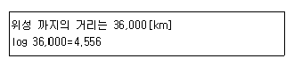
- 약 185.6[dB]
- 약 200.7[dB]
- 약 203.7[dB]
- 약 211.7[dB]
(정답률: 73%)
68. 다음 중 AM 스테레오 방식의 기본원리가 아닌 것은?
- 직각변조방식(AM/AM)
- 진폭각도변조방식(AM/PM, AM/FM)
- 독립측파대방식(AM/PM)
- 강도변조방식(IM/PM)
(정답률: 76%)
69. 다음 중 통신망의 발전 및 진화단계로 옳은 것은?
- BcN → PSTN → N-ISDN → B-ISDN
- PSTN → N-ISDN → B-ISDN → BcN
- PSTN → B-ISDN → N-ISDN → BcN
- N-ISDN → BcN → PSTN → B-ISDN
(정답률: 62%)
70. 디지털방송 8-VSB 송신기 블록에서 변조 이전 과정의 순서로 맞는 것은?
- 데이터 랜덤화 - 리드솔로몬 부호화 - 데이터 인터리브 - 트렐리스 부호화
- 리드솔로몬 부호화 - 데이터 랜덤화 - 데이터 인터리브 - 트렐리스 부호화
- 데이터 랜덤화 - 데이터 인터리브 - 리드솔로몬 부호화 - 트렐리스 부호화
- 데이터 랜덤화 - 리드솔로몬 부호화 - 트렐리스 부호화 - 데이터 인터리브
(정답률: 74%)
71. 우리나라에서 사용 중인 아날로그 TV 방송 방식은?
- PAL 방식
- SECAM 방식
- NTSC 방식
- PAL-1 방식
(정답률: 74%)
72. 다음 중 SECAM 컬러텔레비전 방식에 대한 설명으로 틀린 것은?
- 주사선마다 2개의 색차 신호를 순차적으로 교체하면서 색부 반송파를 주파수 변조하여 휘도 신호에 중첩시켜 전송한다.
- 프랑스의 텔레비전 회사가 개발하였다.
- 주파수 변조(FM)를 이용하기 때문에 전송로에서 발생하는 진폭 일그러짐이나 위상 일그러짐에 강한 특성을 가진다.
- 인터리브(interleave) 효과로 흑백 방식과 양립성이 우수하고 수직방향의 색 해상도가 우수하다.
(정답률: 47%)
73. 종합유선방송국 음성신호의 특성 및 질적 수준에 있어 적합하지 않은 것은?
- 사용하여야 할 기저대역 주파수는 50[Hz]에서 15[kHz] 범위 안일 것
- 출력의 레벨은 0[dBm]을 기준으로 하여 ±10[dB] 이내일 것
- 출력의 레벨은 0[dBm]을 기준으로 하여 ±5[dB] 이내일 것
- 출력 임피던스는 600[Ω] 평형일 것
(정답률: 69%)
74. 다음 중 위성방송에서 전파손실의 가장 큰 원인으로 적합한 것은?
- 자유공간 손실
- 감쇠와 흡수
- 산란과 회절
- 다중경로 손실
(정답률: 80%)
75. 다음 중 위성방송의 특징으로 옳지 않은 것은?
- 위성으로부터 직접 전파를 수신하기 때문에 화질의 열화가 적다.
- 산간벽지, 외딴 섬 등에서도 선명한 방송의 수신이 가능하다.
- 위성을 중계매체로 하기 때문에 비상시 전국적인 방송이 불가능하다.
- 양질의 영상과 음성 수신이 가능하다.
(정답률: 86%)
76. 우리나라의 지상파 DMB 시스템에서 TV 음성 부호화 동기방식은?
- MPEG-4 AVC
- MPEG-Ⅱ Layer Ⅱ
- MPEG-1 Layer Ⅱ
- MPEG-4 BSAC
(정답률: 68%)
77. 다음 중 스트리밍 기술과 직접적으로 관련 없는 것은?
- VoIP
- IP 망에서 VOD 서비스
- Web camera를 통한 화상 서비스
- JPEG를 이용한 정지영상 서비스
(정답률: 78%)
78. FM 송신기에서 좌신호와 우신호를 합과 차신호로 만들고 합신호는 모노형 수신기 청취자에게, 차신호는 스테레오 수신자에게 전송되도록 하는 회로는?
- 프리엠퍼시스회로
- 매트릭스회로
- 평형변조기
- FM 여진기(Excitor)
(정답률: 71%)
79. 다음 중 제한된 용량을 가진 통신자원에 대하여 다수의 독립적인 사용자가 공동의 자원으로 채널 을 공유하기 위해 방송통신시스템에서 사용되는 다중화의 종류로 옳지 않은 것은?
- 비동기 위상 다중화
- 동기 시분할 다중화
- 비동기 시분할 다중화
- 주파수 분할 다중화
(정답률: 56%)
80. 다음 중 디지털방송의 변조에서 요구되는 사항이 아닌 것은?
- 대역폭 효율이 낮을 것
- 전력 효율이 높을 것
- 잡음 및 간섭에 강할 것
- 출력 스펙트럼이 단순한 구조일 것
(정답률: 73%)
5과목: 전자계산기 일반 및 방송설비기준
81. 다음 중 데이터 단위에 대한 표현이 틀린 것은?
- Byte : 8Bit
- Word : 16Bit
- Nibble : 4Bit
- Double Word : 24Bit
(정답률: 70%)
82. 다음 중 방송사업자에 대한 설명이 틀린 것은?
- 지상파방송사업자 : 지상파방송사업을 하기 위하여 방송통신위원회로부터 허가를 받은 자
- 종합유선방송사업자 : 종합유선방송사업을 하기 위하여 방송통신위원회로부터 허가를 받은 자
- 위성방송사업자 : 위성방송사업을 하기 위하여 방송통신위원회로부터 허가를 받은 자
- 방송채널사용사업자 : 방송채널사용사업을 하기 위하여 방송통신위원회로부터 허가를 받은 자
(정답률: 61%)
83. 다음 중 지상파방송사업에 대한 정의로 옳은 것은?
- 인공위성의 무선국을 이용하여 방송을 행하는 사업
- 방송을 목적으로 하는 지상의 무선국을 관리ㆍ운영하며 이를 이용하여 방송을 행하는 사업
- 전송ㆍ선로설비를 이용하여 방송을 행하는 다채널 방송사업
- 특정채널의 전부 또는 일부 시간에 대한 전용 사용 계약을 체결하여 그 채널을 사용하는 사업
(정답률: 76%)
84. 다음 중 CPU의 개입 없이 메모리와 주변장치 간에 데이터를 전달할 수 있는 것은?
- 인터럽트(Interrupt)
- 스풀링(Spooling)
- 버퍼링(Buffering)
- DMA(Direct Memory Access)
(정답률: 78%)
85. 다음 중 자료가 발생할 때마다 즉시 처리하여 응답하는 방식은?
- 일괄 처리 시스템
- 실시간 처리 시스템
- 시분할 시스템
- 병렬 처리 시스템
(정답률: 82%)
86. 다음 중 사용자가 단말기에서 여러 프로그램을 동시에 실행시키는 기법은?
- 스풀링(Spooling)
- 다중 프로그래밍(Multi-programming)
- 다중 처리기(Multi-processor)
- 다중 태스킹(Multi-tasking)
(정답률: 70%)
87. 빈번하게 페이지 부재가 발생하여 실제 작업에 걸리는 시간보다 페이지 교체에 더 많은 시간이 소요되는 현상을 무엇이라 하는가?
- 스레싱(Thrashing)
- 워킹 셋(Working Set)
- 교착상태(Deadlock)
- 세마포어(Semaphore)
(정답률: 70%)
88. 다음 중 전송망사업등록신청시 방송통신위원회에 첨부하여 제출할 서류가 아닌 것은?
- 등록신청서
- 설립시 필요한 자금
- 기술인력 현황
- 방송위원회 추천서
(정답률: 74%)
89. 2진수 11010을 1의 보수 및 2의 보수로 나타낸것은?
- 1의 보수 = 00101, 2의 보수 = 00110
- 1의 보수 = 10111, 2의 보수 = 11011
- 1의 보수 = 01011, 2의 보수 = 11010
- 1의 보수 = 00101, 2의 보수 = 01010
(정답률: 72%)
90. 다음 중 8진수 (53.6)8을 10진수로 올바르게 표현한 것은?
- 43.75
- 42.25
- 38.75
- 41.85
(정답률: 70%)
91. 동축케이블 분배기 및 분기기 등에 의한 상ㆍ하향신호의 전송손실을 보상하기 위하여 사용되는 치는?
- 증폭기
- 보호기
- 감쇄기
- 중계기
(정답률: 76%)
92. 다음 중 블랭킷에어리어에 관한 설명으로 옳은 것은?
- 방송국의 송신공중선으로부터 발사되는 강한 전파로 인하여 다른 전파와의 간섭이 일어나는 지역을 말한다.
- 방송국의 수신공중선으로부터 받는 강한 전파로 인하여 다른 전파와의 간섭이 일어나지 않는 지역을 말한다.
- 단파방송의 경우에는 지상파의 전계강도가 미터마다 3볼트 이상인 지역을 말한다.
- 중파방송의 경우에는 지상파의 전계강도가 미터마다 4볼트 이상인 지역을 말한다.
(정답률: 79%)
93. 다음 중 기억장치의 주소를 기억하는 제어장치는?
- 프로그램 카운터(PC)
- 명령 레지스터(IR)
- 번지 레지스터(MAR)
- 기억 레지스터(MBR)
(정답률: 61%)
94. 입력신호 에너지를 2개 이상으로 균등하게 분배하는 장치는?
- 분사기
- 분압기
- 분기기
- 분배기
(정답률: 74%)
95. 종합유선방송 구내전송선로설비의 분기기ㆍ분배기 특성에서 반사손실은 얼마인가?
- ±0.75[dB] 이내
- 15[dB] 이상
- 20[dB] 이하
- -65[dB] 이하
(정답률: 61%)
96. 다음 중 정보표현의 단위 크기 비교가 올바르게 된 것은?
- 비트 < 워드 < 바이트 < 파일
- 바이트 < 필드 < 레코드 < 파일
- 바이트 < 레코드 < 파일 < 워드
- 바이트 < 필드 < 워드 < 레코드
(정답률: 77%)
97. 방송통신위원회가 주파수 분배시 고려해야 할 사항으로 적합하지 않은 것은?
- 국방ㆍ치안 및 조난구조 등 국가안보ㆍ질서유지 또는 인명안전의 필요성
- 주파수의 이용 현황 등 국내의 주파수 이용 여건
- 국내 전파 사용료 현황
- 국제적인 주파수 사용 동향
(정답률: 65%)
98. 다음 중 TCP/IP 모델의 4계층에 속하지 않는 것은?
- 세션 계층
- 트랜스포트 계층
- 인터넷 계층
- 네트워크 링크 계층
(정답률: 66%)
99. 전송ㆍ선로설비에 대한 기술기준의 적합여부 확인 등에 관하여 필요한 사항은 무엇으로 정하는가?
- 교육과학기술부령
- 행정안전부령
- 방송통신위원회 고시
- 문화체육관광부령
(정답률: 70%)
100. 유선방송시설의 설치도면에서 다음 기호의 명칭은?(문제 오류로 그림이 없습니다. 정확한 그림 내용을 아시는분께서는 관리자 메일 또는 자유게시판에 업로드 부탁 드립니다. 정답은 2번입니다.)
- 주 전송장치(Head End)
- 인입단자(Tab off)
- 전치증폭기(Head Amp)
- 채널변환장치나Convertor)
(정답률: 73%)